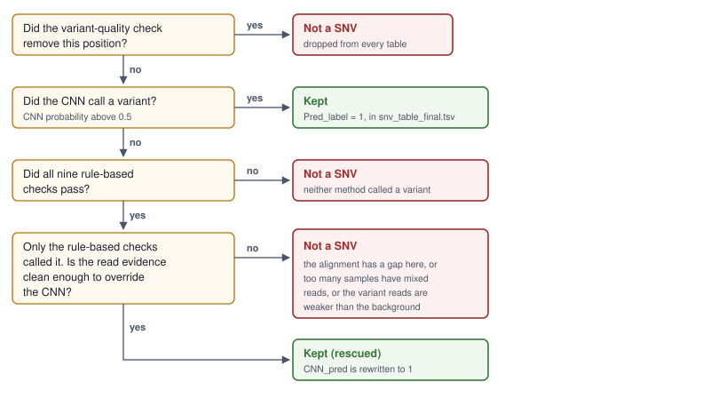
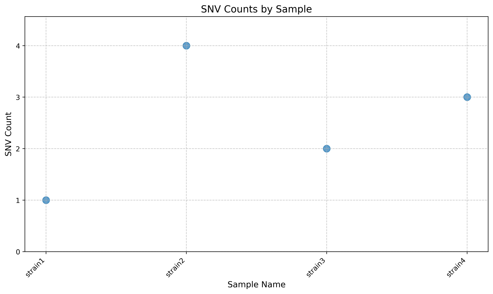

SNV filters and calls explained
Every candidate position gets two independent verdicts: one from the neural network, one from a chain of nine rule-based checks inherited from the WideVariant pipeline. Both are reported in the SNV tables for every position, along with which check did the rejecting, so you can always reconstruct the reasoning behind a call.
The two verdicts
The network looks at the raw read counts for the whole cohort at one position and returns a
probability that this is a real difference between the isolates. Above 0.5 counts as a call.
Its raw output, before anything else happens, is in snv_table_cnn_raw.tsv.
The rule-based checks work the other way round. They start from every sample’s base call at the position and remove the calls that fail a cutoff. A position stays a candidate as long as at least two samples still have a confident, differing base call after all the removing is done. The moment only one distinct base is left, the position has stopped being a difference between isolates, and whichever check emptied it out gets the blame.
Neither verdict is treated as the truth on its own. The next section is how they are combined.
How the two combine
{kind=link}

The order in which the calling stage decides Pred_label.
In words:
If the variant-quality check rejected the position, it is not a SNV. This one check has veto power. A position
bcftoolswas not confident about in the first place is dropped whatever the network thinks, and it is removed from the tables entirely rather than being listed as rejected.If the network called a variant, it is a SNV. It does not matter whether the rule-based checks agreed. This is the case that recovers real mutations at low depth, where a per-sample coverage cutoff cannot be met but the pattern across the cohort is unambiguous.
If neither called a variant, it is not a SNV and it never appears in the tables.
If only the rule-based checks called it, AccuSNV asks whether the read evidence is clean enough to override the network. Three things count against it:
the position sits next to a gap in the alignment (
Gap_filteris 1);too many samples have mixed read support (
Fraction_ambiguous_samplesabove the cutoff, 0.25 for cohorts of 20 or fewer samples, 0.1 above that);the reads supporting the variant in the samples that carry it are weaker than the stray non-reference reads in the samples that do not.
Any one of these and the position is dropped. Otherwise it is kept.
Warning
When a position is rescued this way, the CNN_pred column in the SNV tables is rewritten to 1
and CNN_prob to one minus the original probability. If you want the network’s unmodified
verdict, read snv_table_cnn_raw.tsv, which is written before any of this happens.
The final verdict is the Pred_label column. snv_table_final.tsv is exactly the rows of
snv_table_unfiltered.tsv where Pred_label is not 0.
The nine checks
They run in this order, and the order matters for reading the columns.
Column |
What it requires |
Default cutoff |
Set by |
|---|---|---|---|
|
The call quality at this position is high enough. The score is the |
above 30 |
|
|
Enough reads on both strands. A variant seen only on forward reads is usually a mapping or strand artifact. |
at least 5 forward and 5 reverse |
|
|
Most of a sample’s reads agree on one base. Rejects positions where a sample’s reads are split. |
at least 85% |
|
|
Few of the covering reads contain an insertion or deletion anywhere, which would make the local alignment unreliable. |
fewer than 33% |
|
|
Enough samples have a confident base call to be worth comparing. |
no minimum |
|
|
The median read depth across all samples is high enough. |
at least 5x |
|
|
Read depth stays close to the genome-wide depth, so the position is not in a repeat or a duplication. |
under 4x the genome median on average, under 7x in any one sample |
|
|
At least one sample carries a confident base that differs from the inferred ancestor, so there is an actual difference to report. |
mutation quality at least 1 |
|
|
Reads align cleanly here. Flags positions where the samples carrying the variant lose almost all their depth while the others keep theirs, the signature of a gap or a mismapping. |
variant samples below 5% of their median depth while the others stay above 20% |
not adjustable |
The first four are per-call: they remove one sample’s base call at one position. The next three
are per-position: they remove the position for every sample at once. Fix_filter and
Gap_filter are per-position too, but they ask different questions, described below.
Reading a filter column
Each of the nine columns holds one of three values, and they are not a pass/fail flag:
Value |
Meaning |
|---|---|
|
The position still varied between samples after this check ran. It passed. |
|
This check is the one that removed the variation. The position had at least two distinct base calls going in and only one coming out. |
|
The position had already stopped varying before this check ran, so this check never got to look at it. |
Because the checks run in a fixed order, a rejected position has at most one 1, and every
column after it is -1. That makes the row easy to read: scan left to right for the first
non-zero value and you have the reason.
Here are two real rows from the test dataset:
genome_pos Pred_label CNN_pred WideVariant_pred CNN_prob Qual Cov MAF Indel MFAS MMCP CPN Fix Gap
11476 1 1 1 0.99997 0 0 0 0 0 0 0 0 0
257244 1 1 0 0.99987 0 1 -1 -1 -1 -1 -1 -1 0
Position 11,476 passed every check and both methods agreed. Position 257,244 was removed by the
coverage check: at 14x median depth, the one isolate carrying the variant did not have five
forward and five reverse reads. Every later column is -1 because there was nothing left to
check. The network scored it 0.9999 anyway and it is in the final table.
Gap_filter sits outside this chain. It is computed during the network’s preprocessing, not by
the sequential filters, so it is 0 or 1 and never -1.
The Fraction_ambiguous_samples column
Not a filter, but the number the rescue decision turns on. Among the samples that carry the majority base at this position, it is the fraction whose reads do not cleanly agree, meaning the most common base accounts for less than 95% of their reads.
Read it as: how much of the cohort is muddy at this position. Clean sites are 0. A position where half the samples that supposedly match the reference actually have a smear of two bases is 0.5, and that pattern is much more often a mapping problem than eight independent mutations. The dashboard shows this as “samples without clean agreement”.
The quality column
The mutation quality for the position, computed only from ingroup samples. For every pair of samples whose confident base calls disagree, take the lower of the two call qualities; the position’s quality is the highest such value across all disagreeing pairs. So it answers: of all the pairs of isolates that differ here, how good is the best-supported disagreement?
A . in this column means no mutation quality could be computed, which happens when the position
had stopped varying by the time the calculation ran. That is normal for positions the network
rescued.
Inferring the ancestral allele
Almost everything downstream depends on knowing which base at each position is ancestral: which allele is “derived”, whether a change is nonsynonymous, how far each sample is from the common ancestor, and the direction of every mutation counted in dN/dS. AccuSNV works it out in four steps, taking the first that resolves:
Ingroup and outgroup share exactly one allele. That shared allele is the ancestor. This is the case an outgroup exists for, and the only one where the ancestor is inferred from evidence rather than assumed.
No overlap, but the ingroup has a single most common allele. That allele becomes the ancestor. Without an outgroup this is what always happens, and it amounts to assuming the majority of your isolates kept the ancestral state. Usually right for a clonal collection; wrong when the mutation happens to be the majority.
Still unresolved: use the best outgroup sample. AccuSNV ranks outgroup samples by how often they matched the ancestor at the positions step 1 already resolved, and takes the base from the best-matching one that has a call here.
Fall back to the reference base.
Which step was used for how many positions is written to the log:
[calling] Ancestral alleles inferred for 10 positions: 0 from an unambiguous ingroup/outgroup
overlap, 10 from the ingroup major allele where there was no overlap, 0 from the
closest outgroup sample (none), 0 fell back to the reference base
That is the paired-end test dataset, which has no outgroup, so every position fell to step 2. If your run shows most positions resolved at step 2 and you did include an outgroup, the outgroup is probably too distant to have a base call at most SNV positions.
The reference genome is not the ancestor and AccuSNV does not treat it as one. The
reference_allele column is reported separately from ancestral_allele, and they differ
whenever the whole ingroup has diverged from the reference at a position.
Sample-level checks
Two checks look at whole samples rather than positions.
The first is the zero-coverage fraction. A sample with no read coverage at more than
min_cov_samp percent (45 by default) of the candidate positions is dropped from the network’s
input, which is aimed at a failed library or a sample of the wrong species. The histogram in
2-SNV-filtering/group_<group>/snv_filter_sample_coverage_hist.png shows the median depth of
every sample with the cutoff line drawn on it.
The second is explicit exclusion. exclude_samp either names samples to drop or gives a rough
SNV count above which a sample is dropped. The rough count is the one in snvs_per_sample.tsv, computed
before any filtering: for each candidate position, AccuSNV finds the least common base across
samples and counts how many positions each sample carries it at. An isolate with far more than
its neighbours is usually contaminated or mislabelled.
{kind=link}

snvs_per_sample.png, the pre-filter rough count per sample. On four clean isolates this is
undramatic. On a real cohort, one point an order of magnitude above the rest is the thing to
investigate.
Where each position ends up
Situation |
In |
In |
|---|---|---|
Both methods called a variant |
yes, |
yes |
Only the network called it |
yes, |
yes |
Only the checks called it, evidence clean |
yes, |
yes |
Only the checks called it, evidence muddy |
yes, |
no |
Neither method called it |
no |
no |
Rejected by the variant-quality check |
no |
no |
So snv_table_unfiltered.tsv is not every position in the genome, or even every position
bcftools looked at. It is the union of what the two methods called, which is what you want when
you are asking “was this position considered, and why was it dropped?” and not what you want if
you are asking “is this position covered at all?”.
Very large candidate sets
Above fast_mode_positions candidate positions (100,000 by default), AccuSNV switches to fast
mode: it scores everything with the network, writes snv_table_cnn_raw.tsv and
candidate_mutation_table_final.npz, and skips annotation, dN/dS, the tree and the report. It
says so loudly in the log.
Reaching six figures of candidate positions in isolates that are supposed to be closely related
usually means something upstream is wrong. Check that every sample was mapped to the right
reference, and look at snvs_per_sample.tsv for one sample dragging the whole set.